Our project aimed to tackled the problem of finding what, if any, role lobbying played in the passing of a piece of legislature. To narrow down the amount of data that the group would be working with, it was decided that only House Bills (H.R.) would be used. Our initial work led us into a website that tracks past legislature. The team quickly found however that the website seemed to contain very few data points and later it was found out the website only tracks bills that have succeeded. See data here.
Following this the team decided that the best course of action would be to receive that data directly from the Congress website. Below is a screen capture of Congress' website where we collected the data.
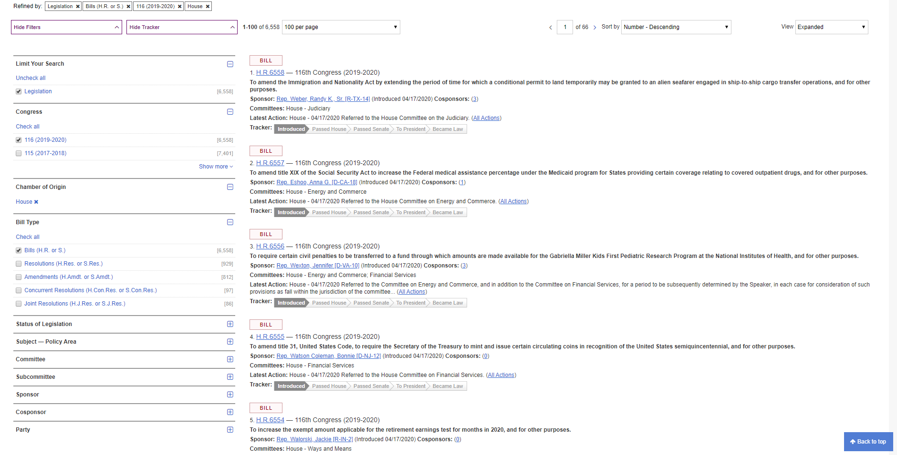
CREATE TABLE `metadata` (
`Bill` VARCHAR(12) NOT NULL,
`Date` VARCHAR(12) NOT NULL,
`Dyes` INT(3) NOT NULL,
`Dno` INT(3) NOT NULL,
`Dpres` INT(3) NOT NULL,
`Dnv` INT(3) NOT NULL,
`Ryes` INT(3) NOT NULL,
`Rno` INT(3) NOT NULL,
`Rpres` INT(3) NOT NULL,
`Rnv` INT(3) NOT NULL,
`Iyes` INT(3) NOT NULL,
`Ino` INT(3) NOT NULL,
`Ipres` INT(3) NOT NULL,
`Inv` INT(3) NOT NULL,
`Totalyes` INT(3) NOT NULL,
`Totalno` INT(3) NOT NULL,
`Totalpres` INT(3) NOT NULL,
`Totalnv` INT(3) NOT NULL,
`Roll` INT(4) NOT NULL,
`Result` TEXT(1) NOT NULL,
`Time` TIME NOT NULL,
`Quarter` INT(1) NOT NULL,
`Year` INT(4) NOT NULL,
`Majority` VARCHAR(4) NOT NULL,
`Leaning` VARCHAR(4) NOT NULL
);
CREATE TABLE `lobbyingdata` (
`billId` varchar(10) NOT NULL,
`amount` int(11) NOT NULL,
`issueCode` varchar(45) NOT NULL,
`lobbyId` varchar(45) NOT NULL,
`lobbyYear` int(11) NOT NULL,
`lobbyDate` date NOT NULL,
`registrantName` varchar(50) NOT NULL,
`clientName` varchar(50) NOT NULL,
`lobbyistNames` varchar(300) NOT NULL,
`quarterType` varchar(50) NOT NULL,
`quarterDates` varchar(50) NOT NULL
);
This model was the first one that was able to produce results in any meaningful capacity. While the model's overall accuracy was somewhat acceptable(68%), it left a lot to be desired given it's false positive rate was around 85%. Additionally the feature importance showed the model created a very low connection between lobbying amount and the issue code. It placed the highest importance on the bill ID (ex: H.R. 1055), which meant that in short this model was not useful.
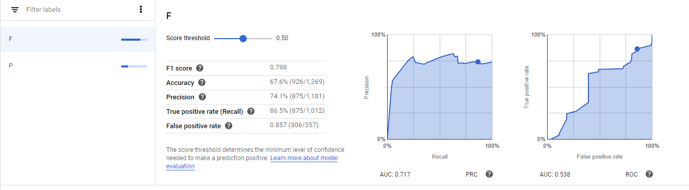
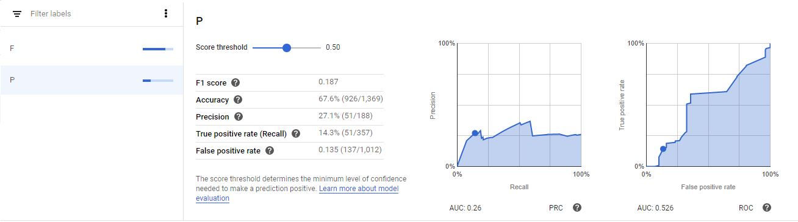
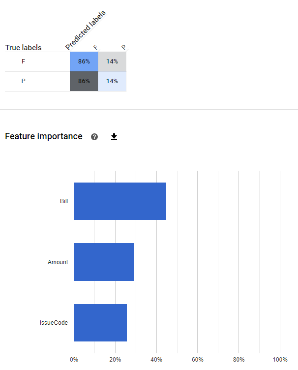
The next model attempted using only lobbying data, with the hopes that the team would be able to find a higher correlation between lobbying data and a prediction on either pass or fail. The model showed that lobbyist names and registrant names were the two largest factors in passing a bill, which was encouraging for future work. Unfortunately this model had the issues of the previous model, only worse. The false positive rate increased to 95% and the accuracy of the model went down to 57%. At this point the group began considering other options on rating if a bill would pass, and decided on using the total amount of yes votes.
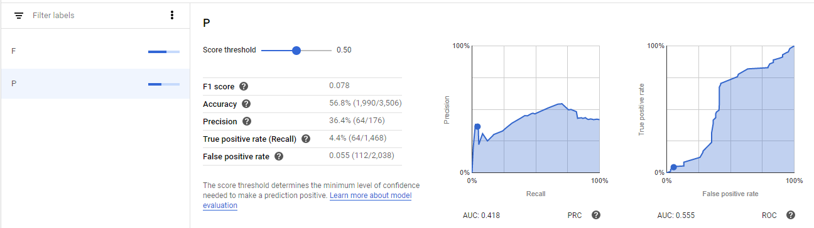
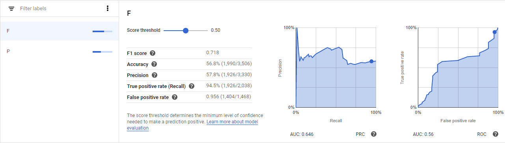
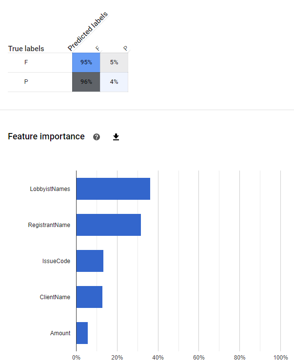
The idea behind using the yes votes allowed the model to create a range for its prediction, along with giving a confidence interval. This would allow the person making a prediction to know how close they would be to a passing or failing vote, along with how confident the model is on the possibility of passing. This idea, while promising, intially did not have high results. A very low r^2 value meant that the model found very little correlation between the lobbying data and the amount of yes's that a bill received. See batch prediction and results for Model 3.
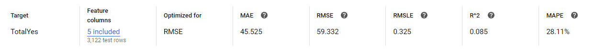
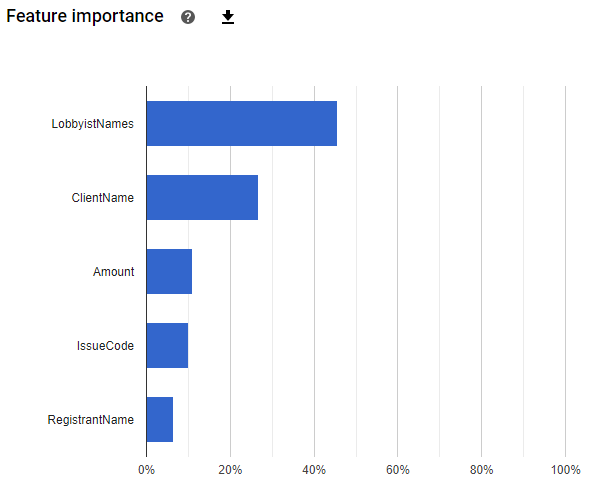
Model 4 followed the same principle except with the hope that more data would allow the model to be more confident in its decision, the amount of data points was increased from 3,000 to 64,000. Additionally far more cpu power was allocated to the model's training. The group began to see a trend in the results of the models that the lobbyist names had the greatest impact in the passing of a bill. However this model, while better, still had a low r^2 value at .17, and the group was unsatisfied with the correlation found.
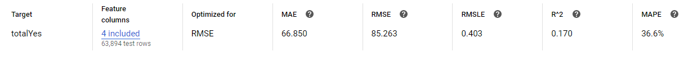
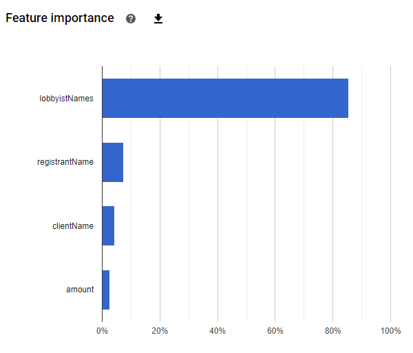
With the fifth and final model, several important changes happened. First and most importantly, two new data columns were added, Majority and Leaning. Majority represented which political party held majority in the House of Representatives at the time, and the bill leaning described which party was affiliated with it. The leaning column was decided as follows. Three categorizations were created: D, R, and B. If half or more of either party voted on a bill, its leaning would be set to the respective party. If more than half of both parties voted on a bill, then the bill would be bipartisan(B). If no votes had been done yet or the bill was brand new, then the representative that introduced it would represent it's leaning.
On top of the two data points that were added, issue Code was reintroduced with the hope that more data points would create a more confident machine. Next, a few thousand more data entires were added, bringing the total data entries up to just under 70,000. Lastly, this model was optimized for Mean Absolute Error. The significance in doing this was that the model would not weigh outliers as heavily, and would instead focus on data that falls in the larger parts of the bell curve. This would mean the bills that received very low votes (less than 100) would have low impact on the model's calculation. While this would make the model less accurate at very low yes votes, the group believed that the individuals that would use this model would use it when they had already gained a non-insignificant amount of yes votes.
In the end with a far lower MAE and an acceptable r^2 value (.79), the group felt confident that this model was consistent enough to allow it to make predictions to the general public.
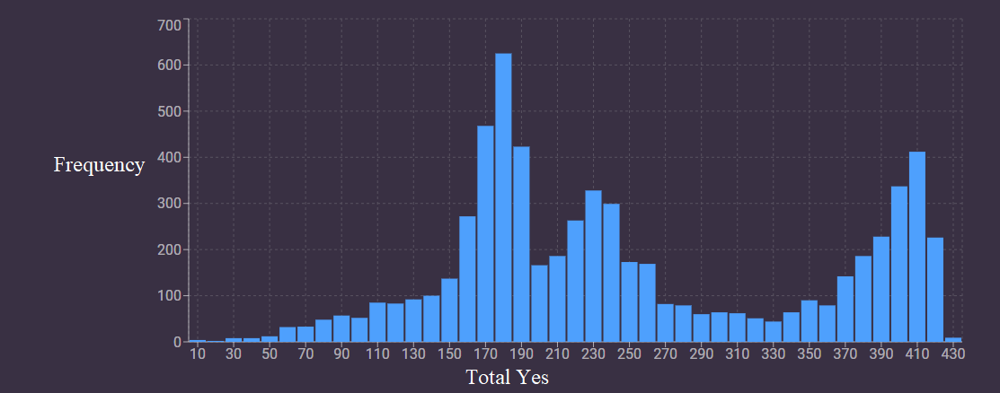
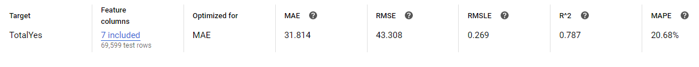
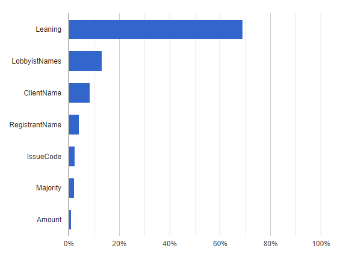